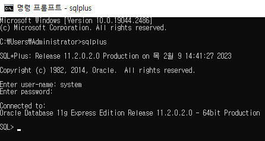
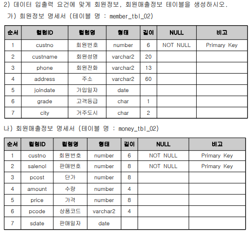
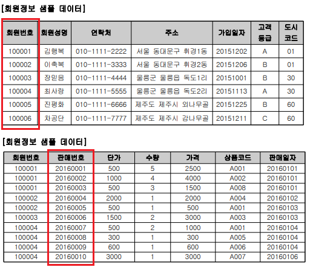
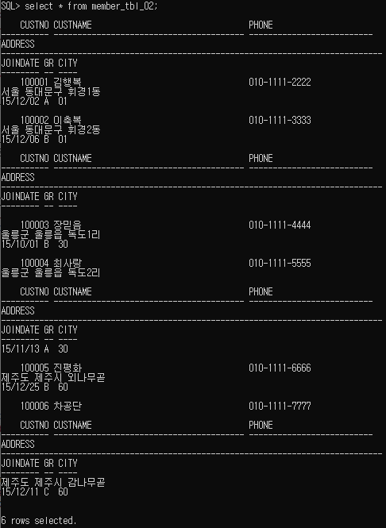
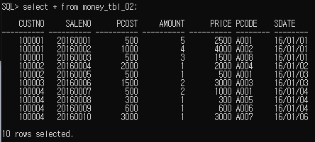
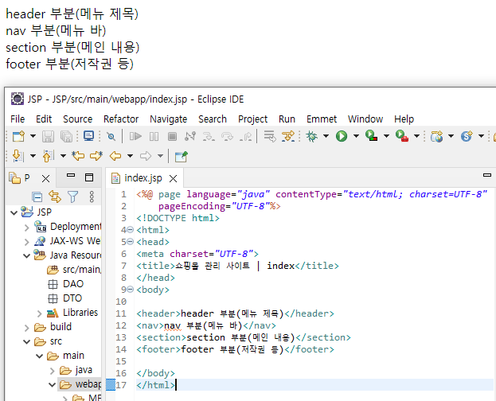
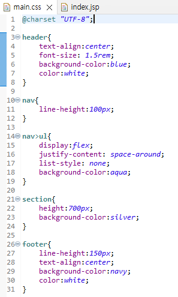
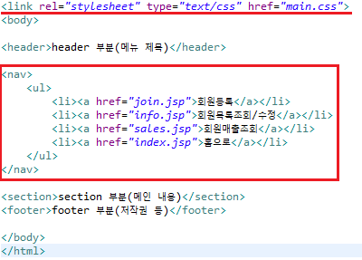
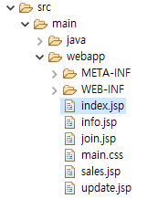
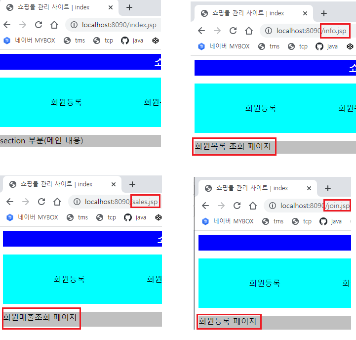

1. 이클립스 톰캣서버 기본설정 후 cmd에서 sqlplus를 입력하여 oracle에 접속한다
기본 아이디 비밀번호는 설치시 설정한 system / 1234 이다

2. 외부평가 문제지에 있는 테이블 자료를 작성한다
이때 cmd에서 바로 작성하면 오타 발생시 새로 작성해야하니 메모장에서 미리 써두고 복붙하자

3. 테이블별로 샘플로 삽입할 데이터를 확인해보자
member는 회원번호가 자동증가, money는 판매번호가 자동증가이다.
sequence 를 만들어서 값을 넣어줄때 시퀀스명.NEXTVAL로 적용해주자
create, sequence, insert SQL문

4. select문을 이용해서 작성한 데이터가 잘 들어갔는지 확인하고 commit 도 꼭 해주자


5. eclipse로 돌아가서 문제에서 요구하는 기본적인 인터페이스를 index.jsp에 구현하자
header,nav,section,footer 순으로 태그를 만들어주고 구현하면 된다

6. 기본적인 CSS 프론트 처리를 해주고 메뉴에 a링크도 넣자
index 완성 후 복붙해서 a링크로 움직일 join,update,sales,info jsp파일도 만들어준다
세부내용은 어짜피 각 jsp파일 작업시 수정할 예정이다
CSS.txt



7. 6에서 넣은 a태그가 잘 작동하는지 페이지 이동으로 테스트 